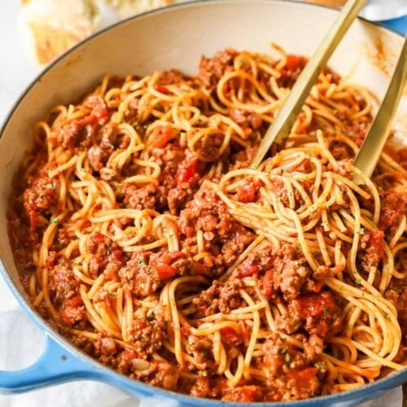

Spaghetti

Description
Spaghetti is one of my favorite dishes. It is easy to make and nutritious.
Ingredients
- Spaghetti Noodles
- Prego Traditional Italian Sauce
- Ground Beef
Steps
- Fill a pot with water to boil noodles in
- When it begins to boil, add noodles and boil for the amount of time specified on the pasta box
- Brown the ground beef
- When the ground beef is done, add the sauce and bring it to a boil to heat and let sit for a couple minutes
- Serve noodles with meat sauce on top